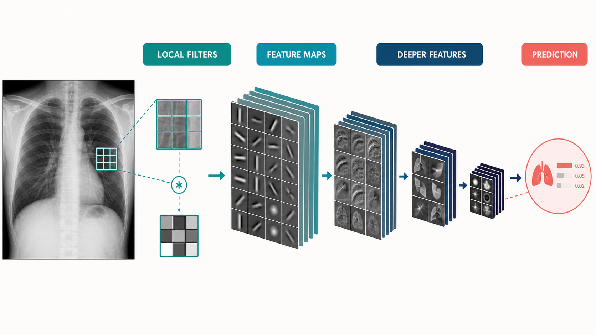
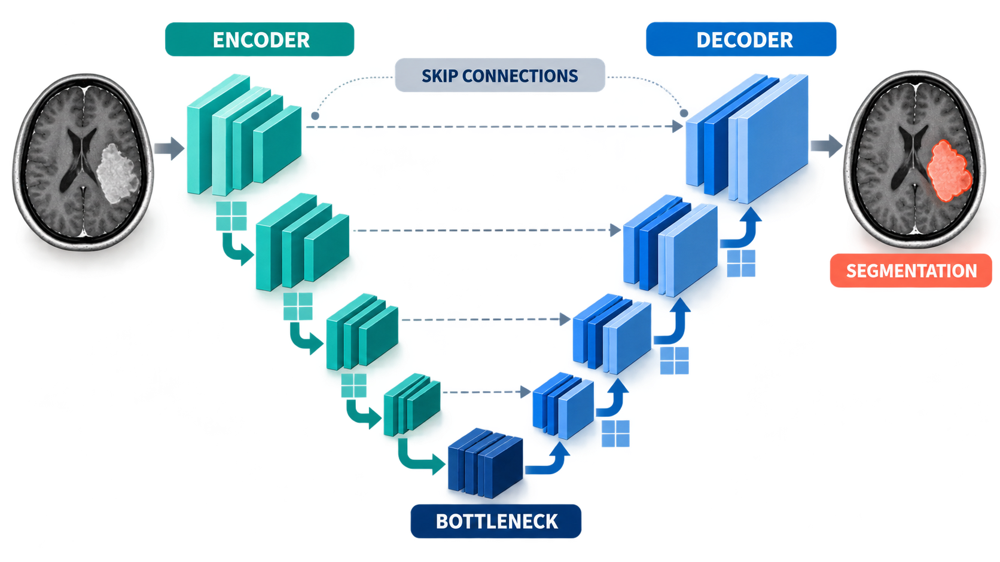
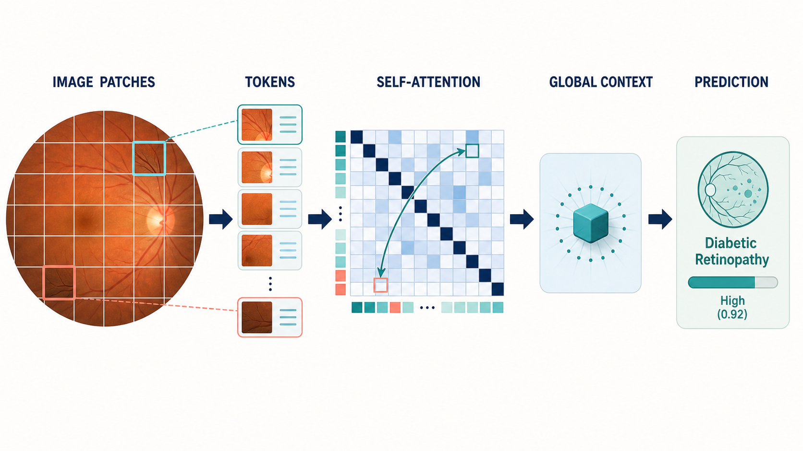

7 Deep Learning Architectures
Architecture is the shape of the function that turns pixels into predictions. The chapter before this described what medical vision systems output; this one describes the machinery that makes those outputs possible, organized around the three great families — convolutional networks, encoder–decoders, and transformers — plus the special-purpose designs for detection, 3D volumes, and promptable segmentation.
Most production medical imaging systems still run on a small set of well-understood architectures, not on the newest paper. nnU-Net for segmentation and a ResNet- or EfficientNet-class encoder for classification solve a remarkable fraction of the field’s problems. Knowing when not to be clever is part of the craft.
You do not need the mathematics to use these systems, but the vocabulary below explains why different problems feel different: a classifier is a fast yes/no opinion; a segmentation system is a pixel-level annotator; a promptable model is a collaborative tool that waits for your input. Understanding the shape of the machine explains the shape of its failure modes.
7.1 Convolutional neural networks from first principles
A convolutional neural network (CNN) is built on one insight: visual features are local and translation-invariant. A small filter slides across the image, computing a weighted sum over a neighborhood (a 3×3 patch, say) at every position, and produces a feature map — a new “image” whose pixels say “how strongly does this pattern appear here?” Early layers learn edges and textures; deeper layers stack those into shapes, organs, and pathology.

Three structural ideas complete the design:
- Pooling shrinks feature maps, giving deeper layers a wider view and some robustness to small shifts.
- Downsampling + expansion progressively reduces spatial detail while increasing the number of channels, ending in a compact representation used for classification.
- Residual connections let very deep networks train reliably by giving each block a shortcut that carries information forward unchanged.
Classic encoders — ResNet, EfficientNet, DenseNet, ConvNeXt — differ in the details but share this DNA, and they remain the default backbones for classification and detection tasks on 2D images. For medical imaging their advantages are maturity, efficiency, and the availability of natural-image pre-training (Chapter 5). ## The encoder–decoder family: U-Net and its descendants
Classification discards spatial information; segmentation needs it back. The encoder–decoder design solves this: the encoder progressively compresses the image into a small, semantically rich feature map; the decoder progressively expands it back to full resolution; and skip connections carry high-resolution detail from encoder to decoder so fine boundaries survive the trip.
U-Net is this idea in its purest form, and became the default architecture of medical segmentation almost immediately after publication. Its descendants — Attention U-Net, TransUNet, SegFormer, and dozens more — modify the blocks but keep the skeleton.
Picture a symmetric hourglass: the encoder compresses spatial detail while deepening semantics; the decoder expands back to pixel-level output; horizontal skip connections carry fine boundaries from encoder to decoder so they survive the compression. Every serious medical segmentation system since 2015 is a variation on that hourglass.

The most important descendant is not a novel architecture but a policy: nnU-Net (“no new U-Net”) reads a dataset’s geometry, intensity distribution, and class balance and then automatically configures preprocessing, architecture, training schedule, and ensembling. It has been the strongest general-purpose medical segmentation system for years, and its lesson is the field’s most valuable engineering lesson: meticulous, task-adapted configuration of a boring architecture beats a novel architecture trained carelessly.
7.2 Vision transformers
The vision transformer (ViT) replaces convolutions with self-attention: the image is chopped into patches, each patch is embedded as a token, and attention layers let every token weigh information from every other token. Global relationships come for free; locality and translation-invariance must be learned or built in.

In medical imaging, transformers shine where long-range context matters — relating a distant mass to surrounding tissue, or fusing sequences in a multi-parametric MRI study — and where scale allows: transformers are data-hungry, so they pair naturally with self-supervised pre-training on large unlabeled medical archives (Chapter 8).
The modern consensus is hybrid: convolutional stem for local structure, attention for global reasoning, and heavy pre-training. Swin-style windowed transformers, ConvNeXt blocks, and attention-augmented U-Nets are all expressions of that compromise.
7.3 Detection architectures
Detection adds two problems to classification: where and how many.
- Two-stage detectors (Faster R-CNN lineage) first propose candidate regions, then classify and refine each proposal. They are accurate and remain common where boxes matter more than speed.
- Single-stage detectors (YOLO, RetinaNet, DETR-family) predict boxes directly across the whole image in one pass. YOLO’s speed makes it the default when real-time matters, and modern YOLO variants are accurate enough for most clinical screening tasks.
- Anchor-free and transformer detectors (DETR, DINO) treat detection as set prediction and remove hand-designed anchor boxes — elegant, and increasingly competitive.
Medical reality modifies the playbook: lesions are small relative to whole scans, so multi-scale feature pyramids (FPN) matter; a single image may contain dozens of findings of several classes; and false positives carry a real cost in radiologist attention, so operating-point selection is a first-class design decision (Chapter 6).
7.4 3D and video architectures
CT and MRI are volumes; ultrasound and endoscopy are video. The 2D playbook extends in two directions:
- 3D convolutions replace 2D patches with 3D volumes, so a “pixel” filter becomes a voxel filter. This is the natural formulation for volumetric segmentation and is central to nnU-Net’s 3D mode. The cost is memory: a full CT at 1mm isotropic resolution can exceed GPU memory, which is why patch-based training and sliding-window inference are standard practice.
- 2.5D processing treats a volume as a stack of adjacent 2D slices, feeding each slice a few neighbors for context. Cheaper, sometimes nearly as good, and a pragmatic default when data is limited.
- Video architectures add a temporal axis: 3D CNNs over space-time volumes, or recurrent/attention mechanisms that carry state across frames. Surgical video understanding (Chapter 18) is the flagship application.
The engineering theme is context budgeting: how much of the volume, and of time, can the model see at once? Most medical 3D and video systems are clever answers to that question.
7.5 Promptable segmentation: the SAM family
SAM (Segment Anything Model) reframed segmentation as interactive: the model is trained on a billion masks so that, given a prompt — a click, a box, a text phrase — it can segment the indicated object in an image it has never seen. MedSAM and MedSAM2 fine-tune that paradigm on medical data; nnInteractive pushes it toward radiology-grade interactive workflows where the clinician refines the mask with a few clicks.
The clinical meaning is substantial: instead of training a bespoke segmentation model per organ per modality per task — a project — one general model, prompted by a user, covers a broad space of tasks. Generalization to new organs, modalities, and even new institutions is the frontier where this family is actively being pushed, and Chapter 8 places it in the foundation-model landscape it belongs to.
7.6 Choosing an architecture
Practical guidance distilled from the choices that recur across this book:
- Start boring. A pre-trained ResNet/EfficientNet for classification, nnU-Net for segmentation. Novel architectures are a research activity, not a deployment strategy.
- Match architecture to data scale. Small labeled sets favor CNNs with transfer learning or self-supervised backbones; large unlabeled archives justify transformers and foundation models.
- Respect geometry. Use 3D architectures when the pathology is defined by volume context (most CT/MRI segmentation) and 2D when each slice is independently interpretable (some screening tasks).
- Budget for the workflow. Real-time video needs single-stage efficiency; overnight batch CT analysis can afford 3D attention and ensembles.
- Prefer models whose outputs the workflow can consume. A beautiful architecture that outputs a heatmap when the PACS needs a DICOM segmentation object is the wrong architecture.
None of these rules survives contact with a specific problem unchanged — but they are the right starting point, and the next chapter changes the frame from discriminative models (which label pixels) to generative models (which create them).